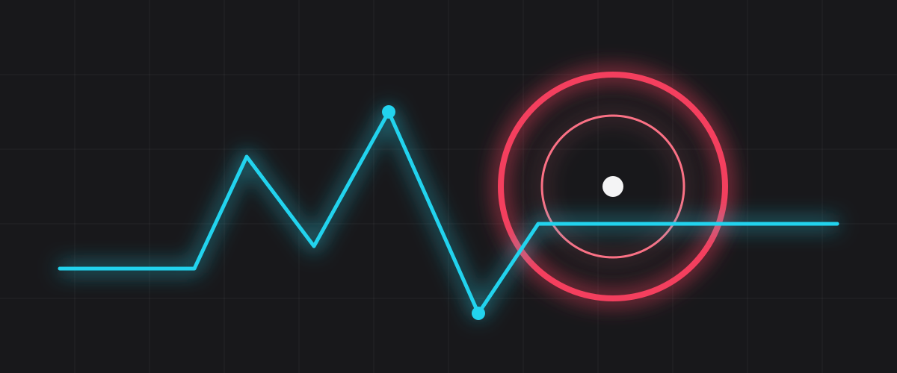

Monitors
Four kindsHTTP, TCP, DNS and heartbeat, every thirty seconds. One region going quiet is noted; three agreeing is an incident.
Relay watches your endpoints from nine regions and lights a service green only when every region has succeeded in the last two minutes. Anything less is amber, with the failing regions named. The board below is the product.
Relay's own services, as a customer would see them. One lamp is amber right now; the row says why.
| Service | Regions agreeing | Last incident | State |
|---|---|---|---|
| Status pages (edge) | 9 of 9 | none in 90 days | Up |
| Checking fleet | 9 of 9 | 9 Aug, Sydney DNS | Up |
| Dashboard and API | 9 of 9 | 27 Jul, planned | Up |
| Webhooks | 9 of 9 | none in 90 days | Up |
| Email delivery | 7 of 9 | now: São Paulo and Sydney slow | Degraded |
| Legacy v1 API | retired | 1 Jun, shutdown | Off |
Four kindsHTTP, TCP, DNS and heartbeat, every thirty seconds. One region going quiet is noted; three agreeing is an incident.
Self-writtenThe timeline starts the moment a check fails and fills in as regions recover. You add the human sentence; Relay keeps the timestamps.
Four channelsEmail, RSS, webhook and Slack. They hear about a fix the second you do, and never see "investigating" for six hours.

The rule
A monitor shows up when every region has succeeded in the last two minutes. Anything less is degraded, in amber, with the regions listed. There is no override, no "acknowledged", no grace period on the public page.
What shipped, and what brokeYes, on every plan including the free one. Point a CNAME at Relay and it issues the certificate.
Status pages are served from a static edge that does not depend on the checking fleet, and Relay's own status page is run by a competitor. That is the only honest arrangement.
No. Status codes, timings and the first 512 bytes of a failed response, for fourteen days, in the region you choose.
One email a week: what changed, what broke, what was learned. No product tips.